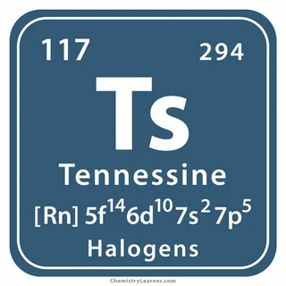
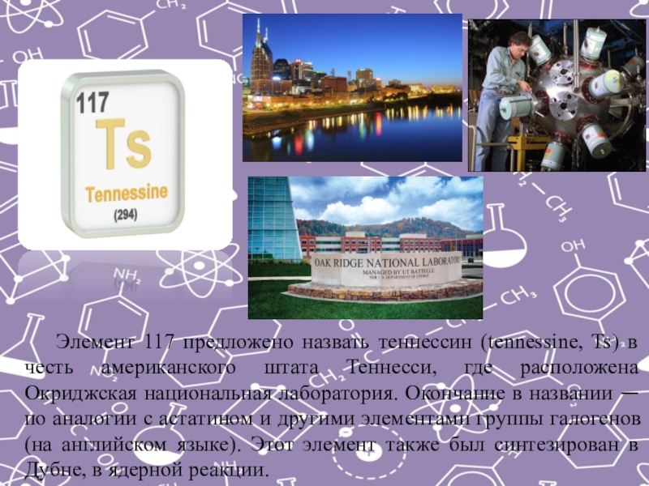

Тенессин(Ts)
Теннесин был получен в российском городе Дубна в 2009 году. Достижение ученых опубликовали в научном журнале Physical Review Letters в 2010 году.Для подтверждения открытия экспериментальное получение элемента повторили в 2012 году в России, и в 2014 – в Германии.

Поскольку Теннесин был открыт совсем недавно, его точные физические свойства все еще являются предметом активных обсуждений. Номинально элемент принято относить к галогенам, хотя его исследования продолжаются. В результате было зафиксировано шесть ядер нового элемента — пять 293Ts и одно 294Ts.Ученым удалось установить, что Теннессин, вероятнее всего, относится металлоидам. Соответственно, его металлические свойства превышают неметаллические. При комнатной температуре элемент твердый, а температура плавления находится в пределах 300-500 градусов. Температура кипения, по разным данным, достигает 550-610 градусов. Однако, более поздние исследования показали, что эти показатели сильно завышены. Ученые установили, что Теннессин начинает кипеть уже при 345 градусах. Такие низкие показатели связаны с тем, что, в отличие от других галогенов, Теннессин может быть одноатомным.

Теннессин не встречается в природе ввиду крайне малого времени жизни его изотопов.
Формально относится к галогенам, однако его химические свойства ещё не изучены и могут отличаться от свойств, характерных для этой группы элементов.